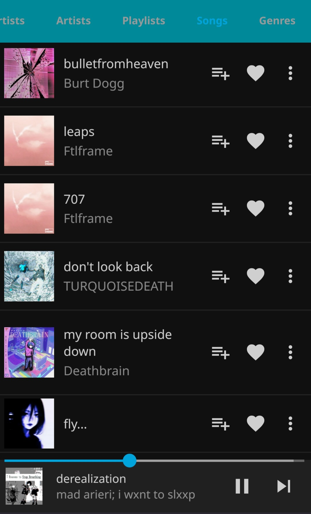
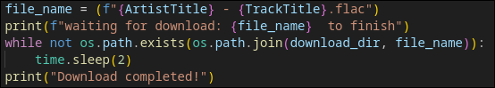

spotify downloader
This is a script I wrote that takes your list of spotify liked songs and playlists, put into a text file (.csv) and then goes through the list searching and downlading from Binilossless website. Which has high quality .flac files.
I know that there already exists the semi-popular spotDL script which does the same, but it sources the downloads off of youtube and the quality isn't amazing. If youre going through the effort I think you might as well get good quality .flacs, so that's what prompted me to want to try making this.
Also useful is that it moves the newly downloaded files into the proper folder heirarchy of Artist -> Album -> Track. (or creates the folder if it doesn't exist yet)
This was key for me since it is required for when I put these files onto my server for the metadata scraper to function correctly.
Here you can see it on my server, so I am able to stream it myself rather than pay spotify.
I am also interested in having an actual physical mp3 player type device like the good old days. Theres something to be said about the simplicity of it. Even if it's just for use in my car
csv files are fun to work with and manipulate with code. You can do all sorts of stuff like subtract 2 sets together and get only unique lines/values from 1. Anyways this was all written in python using pandas library for csv manipulation and selenium for webdriving the binilossless website. The coolest snippet of the code is probably the part that uses the standard os library to check to see if a file exists with the name of the one being downloaded. If not then it waits 2 second sand checks again. This is how my script knows when the download has finished
all in all I'm pretty happy with it, it's functional. There are a few improvements I wouldn't mind making like creating log files of successful downloads and another for a list of failed ones. And also as it is now if a file already exists my script dont care itll download it again and just replace it lol. Not the most efficient
But to be honest it's sort of the type of script you only really use once. Or maybe once in a blue moon to update your downloaded library. But we will see.